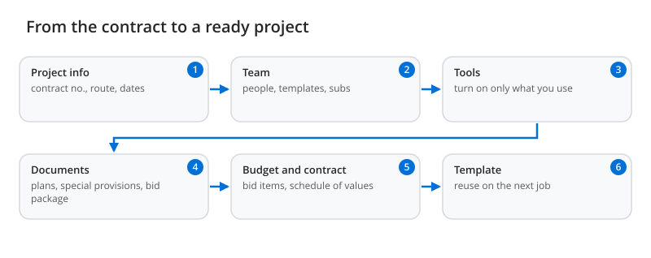

Setting up a Caltrans project in Procore
In one sentence: a Caltrans project in Procore starts from the contract: number, dates, team, bid items and documents, with only the tools the job will actually use turned on.

1. Project information
- Name with the contract number and route, so everyone recognizes it.
- Address or limits of the work, district, start date and working days.
- Stage and type, if your company reports on them.
2. The team
Add your people with their templates, then the subs and suppliers. Decide whether the Resident Engineer and inspectors will be invited; many REs won't log in, and that is fine.
3. Tools to turn on
| Turn on | Why |
|---|---|
| Daily Log, Photos | The record behind every claim and change |
| Drawings, Specifications | Current set in the field |
| RFIs, Submittals | The two logs the RE reviews most |
| Change Events, Change Orders, Commitments, Budget | If you'll manage money in Procore |
| Inspections, Observations, Punch List | Quality and closeout |
| Timesheets | If the crew will enter hours here |
Leave tools you don't need off: every extra tool is another place people have to check.
4. Documents
- Plans and addenda into Drawings. See Drawings and specifications in Procore.
- Special Provisions into Specifications; the Standard Specifications usually stay as a reference PDF in Documents. See Caltrans Standard Specifications: structure and how to read them and Special Provisions: what they change and why they win.
- The bid package, contract and bonds into Documents, in a folder structure you reuse on every job.
5. Budget and contract
Load the bid items as the budget and the prime contract's schedule of values, using the cost codes from Company setup: directory, permissions and cost codes.
6. A project template
Once a project is set up the way you like, save it as a template so the next job starts there.
In Procore's own help
Procore Support. Procore's help pages are the reference for how each screen works today.
Common mistakes
- Project names that don't include the contract number.
- Inviting the RE and expecting answers in Procore instead of the contract's formal channels.
- Loading the whole Standard Specifications into the Specifications tool.